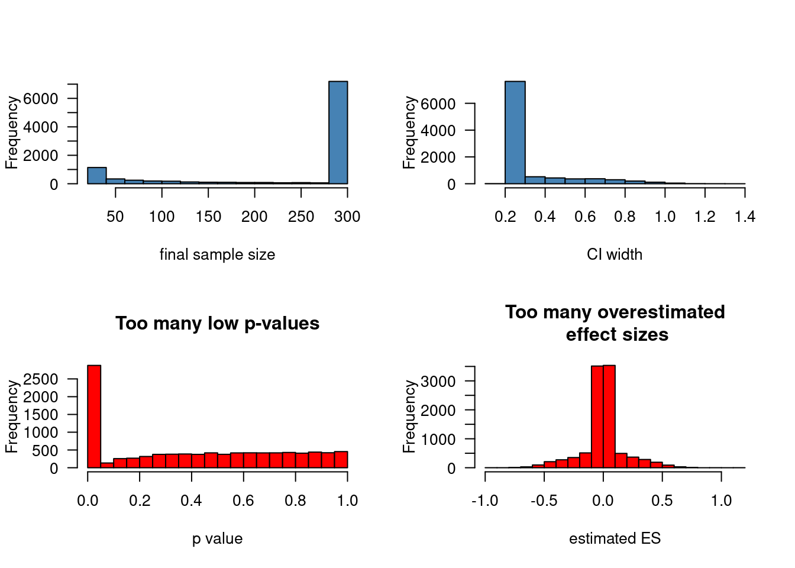
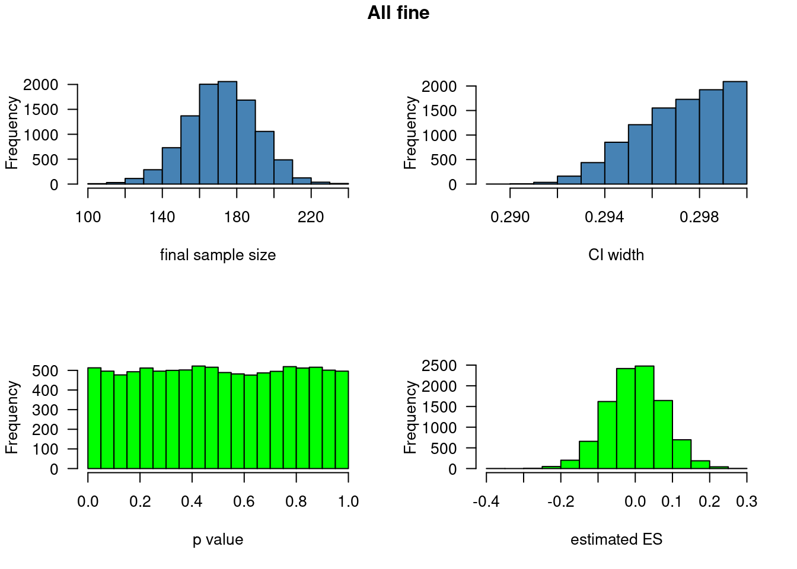
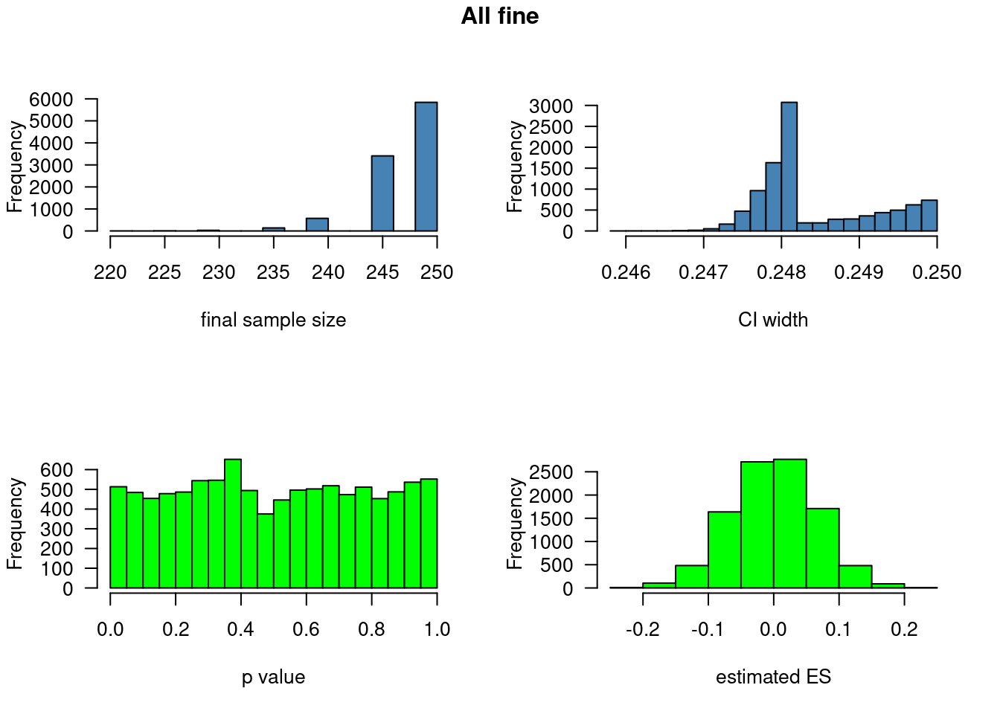
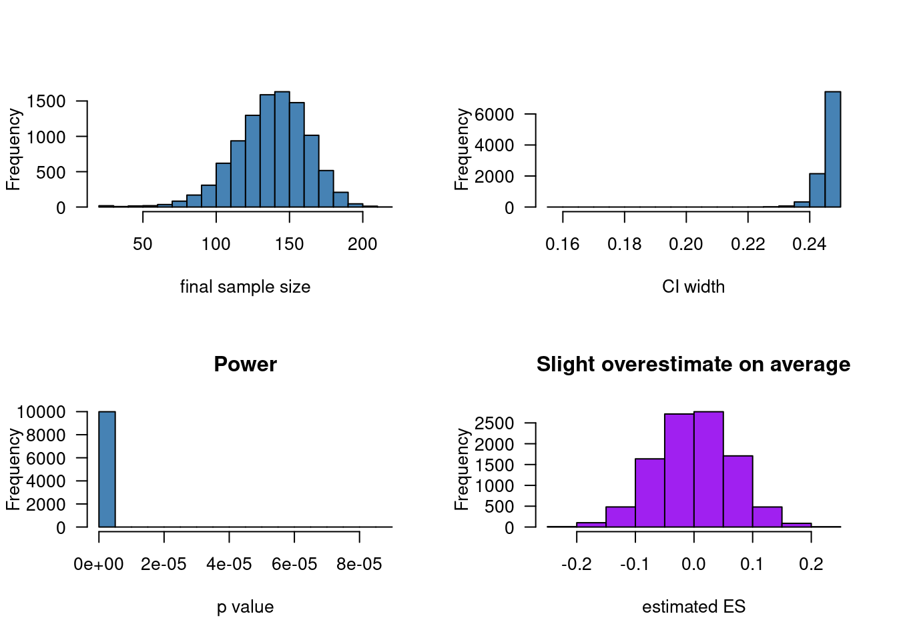

# You can set initial_n, max_n and increment to different
# values to see what happens.
bad_peeking.fnc <- function(initial_n = 20,
max_n = 300,
increment = 5) {
# Generate full data from normal distribution
# with standard deviation as defined above
x <- rnorm(n = max_n)
# Set initial sample size
n <- initial_n
repeat {
# Check if p < 0.05 for the first n observations
test <- t.test(x[1:n])
p <- test$p.value
# Stop collecting more data when p < 0.05,
# or when no more funds are available.
if(p < 0.05 || n >= max_n) {
break
}
# If not, collect more data (increase n)
n <- n + increment
}
# Extract width of confidence interval, ES estimate,
# and check whether the true ES lies in the CI
ci_width <- diff(test$conf.int)
es <- test$estimate
in_interval <- (0 > test$conf.int[1] && 0 < test$conf.int[2])
# Also compute standard deviation of data
sd_x <- sd(x[1:n])
# Return results
return(list(final_n = n,
ci_width = ci_width,
p = p,
estimate = es,
in_ci = in_interval,
sd = sd_x))
}Confidence interval-based optional stopping
R
design features
significance
Stopping to collect data early when the provisional results are significant (“optional stopping”) inflates your chances of finding a pattern in the data when nothing is going on. This can be countered using a technique known as sequential testing, but that’s not what this post is about. Instead, I’d like to illustrate that optional stopping isn’t necessarily a problem if your stopping rule doesn’t involve p-values. If instead of on p-values, you base your decision to collect more data or not on how wide your current confidence interval (or Bayesian credible interval) is, peeking at your data can be a reasonable strategy. Additionally, in this post, I want share some code for R functions that you can adapt in order to simulate the effects of different stopping rules.
When data peeking is bad
Optional stopping—especially if undisclosed or unchecked by sequential testing—is what’s known as a “questionable research practice”. Almost universally in optional stopping, the decision about whether to collect more data or not is based on whether the current p-value is significant: if it is, you stop collecting data; if it isn’t, you continue to collect data until the p-value drops below 0.05 or until you run out of money or time. The problem with this practice is that it increases your chances of finding a significant result if nothing is going on. To find out by how much, you can use the function below.
Here’s how it works. You have funds to run a within-subjects experiment with 300 participants, but you prefer not to waste money. So after you 20 participants, you run a t-test and check if it’s significant. If it is, you stop collecting more data right there. If it isn’t, you run another five participants, check the results again and so on. If you hit 300 participants without getting a significant result, you call it quits. Unbeknownst to you, there is nothing going on in the data. The function, creatively named bad_peeking.fnc() returns the final sample size, the width of the 95% confidence interval, the p-value, the estimated average difference between the two conditions, and whether the 95% confidence interval contains 0 (the true difference).
By running the bad_peeking.fnc() 10,000 times, we can gauge the influence of optional stopping on the sample size, confidence interval width, the p-value distribution, the estimated parameter distribution, and the confidence interval coverage properties.
Update (2023-08-07): I reran the code and added the code for drawing the graphs.
# Run this function 10,000 times
results_bad_peeking <- replicate(10000, bad_peeking.fnc())par(mfrow = c(2, 2), las = 1)
hist(unlist(results_bad_peeking[1, ])
, xlab = "final sample size"
, col = "steelblue"
, main = "")
hist(unlist(results_bad_peeking[2, ])
, xlab = "CI width"
, col = "steel blue"
, main = "")
hist(unlist(results_bad_peeking[3, ])
, xlab = "p value"
, col = "red"
, main = "Too many low p-values")
hist(unlist(results_bad_peeking[4, ])
, xlab = "estimated ES"
, col = "red"
, main = "Too many overestimated\n effect sizes")
In the top left histogram, you see that most of the time (some 70%), you keep on collecting data till the very end. Correspondingly, most of the time, you’ll end up with quite narrow confidence intervals (~ 4 times 1/sqrt(500)) (top right).
However, even though you’re more likely to keep collecting more data, the minority of cases in which you’d stop collecting data before the 300th participant are enough to dramatically skew the distribution of p-values. This is visible in the bottom left graph. Since the null hypothesis is actually true in this simulation, the p-values ought to be uniformly distributed between 0 and 1. Here, however about 30% of the p-values is significant rather than the advertised 5%. By stopping collecting data conditional on a p-value, moreover, you’ll end up with too many overestimated effect sizes (either negatively or positively; bottom right): while the ES distribution is centred at zero, the distribution has “heavy tails”. These are caused by the times the preliminary result happened to be significant because, by sheer luck, it lay far enough from 0. Accordingly, the 95% confidence interval only covers the true parameter (0) in some 70% of cases rather than in 95% of them.
(The standard deviation of the observations, which typically isn’t of much interest I think, is slightly underestimated in this approach: on average, it’s estimated to be 0.99 instead of 1.)
# proportion p-values <= 0.05
mean(unlist(results_bad_peeking[3, ]) <= 0.05)[1] 0.288# proportion true parameter in CI
mean(unlist(results_bad_peeking[5, ]))[1] 0.712# estimated standard deviation
mean(unlist(results_bad_peeking[6, ]))[1] 0.9865701When data peeking isn’t so bad
Okay, so undisclosed optional stopping is pretty bad when the decision to stop or to continue is based on a p-value. But what if it’s based on the precision with which the effect has been estimated? What if, for instance, you decide beforehand to stop collecting more data when the 95% confidence interval spans fewer than 0.3 units?
(The width of the desired confidence interval is chosen fairly arbitrarily here, which I grant is unfortunate. The main point, though, will be that optional stopping needn’t be quite as detrimental as in the previous case as long as the stopping rule isn’t p-value-based.)
(Also, if you prefer Bayesian credible intervals to confidence intervals, just substitute “95% CrIs from a model with uninformative/weakly informative priors” for confidence interval.)
I’ve adapted the function from above so that, instead of stopping the data collection when p < 0.05, we stop when the width of the 95% CI is under 0.3 units.
# This function also takes a stdev and a
# ci_threshold parameter specifying the
# standard deviation of the population
# and the width of the desired 95% confidence
# interval, respectively.
# Note that a 95% CI spans 4 standard errors.
reasonable_peeking.fnc <- function(initial_n = 20,
max_n = 300,
increment = 5,
stdev = 1,
ci_threshold = 0.3) {
# Generate full data
x <- rnorm(n = max_n, sd = stdev)
# Set initial sample size
n <- initial_n
repeat {
# Check if the CI is narrow enough
test <- t.test(x[1:n])
ci_width <- diff(test$conf.int)
# Stop collecting more data when p < 0.05,
# or when no more funds are available.
if(ci_width < ci_threshold || n >= max_n) {
break
}
# If not, collect more data
n <- n + increment
}
# Extract p-value, ES estimate,
# and check whether the true ES lies in the CI
p <- test$p.value
es <- test$estimate
in_interval <- (0 > test$conf.int[1] && 0 < test$conf.int[2])
# Also compute standard deviation of data
sd_x <- sd(x[1:n])
# Return results
return(list(final_n = n,
ci_width = ci_width,
p = p,
estimate = es,
in_ci = in_interval,
sd = sd_x))
}results_reasonable_peeking <- replicate(10000, reasonable_peeking.fnc())
par(mfrow = c(2, 2), las = 1)
hist(unlist(results_reasonable_peeking[1, ])
, xlab = "final sample size"
, col = "steelblue"
, main = "")
hist(unlist(results_reasonable_peeking[2, ])
, xlab = "CI width"
, col = "steel blue"
, main = "")
hist(unlist(results_reasonable_peeking[3, ])
, xlab = "p value"
, col = "green"
, main = "")
hist(unlist(results_reasonable_peeking[4, ])
, xlab = "estimated ES"
, col = "green"
, main = "")
title("All fine", outer = TRUE, line = -1)
Running this function 10,000 and graphing the results, we see that we always stop collecting before the maximum sample size of 300 (top left). That would, of course, be different if we set ci_threshold to a lower value.
But what’s more relevant is the bottom left graph: when the null hypothesis is actually true (as it is here), CI-based optional stopping doesn’t inflate the Type-I error rate: only about 5% of the simulated samples return a significant results. Moreover, as illustrated in the bottom right graph, the distribution of the estimated effect sizes doesn’t have the heavy tails like it did before. Lastly, about 95% of the 95% confidence intervals do indeed cover the true parameter (0).
(Again, the standard deviation of the observations is slightly underestimated in this approach: on average, it’s estimated to be 0.99 instead of 1.)
# proportion p-values <= 0.05
mean(unlist(results_reasonable_peeking[3, ]) <= 0.05)[1] 0.0513# proportion true parameter in CI
mean(unlist(results_reasonable_peeking[5, ]))[1] 0.9487# estimated standard deviation
mean(unlist(results_reasonable_peeking[6, ]))[1] 0.993268Precision-based stopping for a correlation
For the last example, I wanted to explore what happens when (for some reason) you want to measure a correlation with enough precision. Whereas the width of a confidence interval around a mean depends on the number of observations and the variability in the data, the width of a confidence interval around a correlation coefficients depends on the number of observations and the correlation coefficient itself. As a result, by basing the stopping rule on the confidence interval, you’re also indirectly basing it on the parameter estimates themselves. This, in turn, could mean that the parameter estimates you get via optional stopping are biased for correlation coefficients.
(As I’ve written a couple of times before, I’m not a big fan of using correlations for statistical inference inasmuch as I think that regression coefficients are typically better suited for this purpose. But regardless.)
For the sake of the argument, let’s say that “enough precision” means that the width of the 95% confidence interval spans less than 0.25. Again, this is an arbitrary decision here. I’ll explore two cases below: one where the true correlation between the two variables is 0, and one where it’s 0.5.
Null effect
In the simulation below, I assume that the true correlation between the two variables is 0.
correlation_peeking.fnc <- function(initial_n = 20,
final_n = 300,
increment = 5,
r = 0,
ci_threshold = 0.25) {
# Generate full data
x <- MASS::mvrnorm(mu = c(0, 0), n = final_n, Sigma = rbind(c(1, r),
c(r, 1)))
# Set initial sample size
n <- initial_n
repeat {
# Test width of confidence interval
test <- cor.test(x[1:n, 1], x[1:n, 2])
ci_width <- diff(test$conf.int)
# Stop collecting more data when CI is
# smaller than threshold, or when
# no more funds are available.
if(ci_width < ci_threshold || n >= final_n) {
break
}
# Collect more data
n <- n + increment
}
# Extract p-value, ES estimate,
# and check whether the true ES lies in the CI
p <- test$p.value
es <- test$estimate
in_interval <- (r > test$conf.int[1] && r < test$conf.int[2])
# Return results
return(list(final_n = n,
ci_width = ci_width,
p = p,
estimate = es,
in_ci = in_interval))
}results_nullcorrelation_peeking <- replicate(10000, correlation_peeking.fnc(r = 0))
par(mfrow = c(2, 2), las = 1)
hist(unlist(results_nullcorrelation_peeking[1, ])
, xlab = "final sample size"
, col = "steelblue"
, main = "")
hist(unlist(results_nullcorrelation_peeking[2, ])
, xlab = "CI width"
, col = "steel blue"
, main = "")
hist(unlist(results_nullcorrelation_peeking[3, ])
, xlab = "p value"
, col = "green"
, main = "")
hist(unlist(results_nullcorrelation_peeking[4, ])
, xlab = "estimated ES"
, col = "green"
, main = "")
title("All fine", outer = TRUE, line = -1)
You need pretty large samples to get a confidence interval narrow enough if the true correlation is 0, but the p-values are distributed as they should be (5% of them is below 5%), and the confidence intervals cover 0 in about 95% of the cases. There don’t seem to be too many overestimated effect sizes, neither positive or negative.
# proportion p-values <= 0.05
mean(unlist(results_nullcorrelation_peeking[3, ]) <= 0.05)[1] 0.0513# proportion parameter in CI
mean(unlist(results_nullcorrelation_peeking[5, ]))[1] 0.9487Non-null effect
This time I’ll assume a true correlation of 0.5.
results_correlation_peeking <- replicate(10000, correlation_peeking.fnc(r = 0.5))
par(mfrow = c(2, 2), las = 1)
hist(unlist(results_correlation_peeking[1, ])
, xlab = "final sample size"
, col = "steelblue"
, main = "")
hist(unlist(results_correlation_peeking[2, ])
, xlab = "CI width"
, col = "steel blue"
, main = "")
hist(unlist(results_correlation_peeking[3, ])
, xlab = "p value"
, col = "steel blue"
, main = "Power")
hist(unlist(results_nullcorrelation_peeking[4, ])
, xlab = "estimated ES"
, col = "purple"
, main = "Slight overestimate on average")
This time, it’s not a problem that the p-value distribution is skewed since the null hypothesis is actually false (r = 0.5, not 0), so a skewed distribution is what you’d expect.
As for the estimated effect sizes, the distribution looks fine, but the average correlation coefficient seems to be a slight overestimate of the true correlation coefficient (0.51 instead of 0.50). This isn’t a fluke: you get it for all 10 subsets of 1,000 simulations, and you get it if you set r to another non-zero value, too. This confirms my suspicions about CI-based optional stopping for correlation coefficients (it biases the parameter estimates), but also goes to show that the biasing effect is tiny. As for the coverage rate of the confidence intervals, it is slightly lower than advertised (0.94 instead of 0.95).
# proportion parameter in CI
mean(unlist(results_correlation_peeking[5, ]))[1] 0.9415# average estimated correlation
mean(unlist(results_correlation_peeking[4, ]))[1] 0.5108407Conclusion
Since I’ve never used optional stopping, be it p-value or CI-based, myself, I hesitate to offer recommendations concerning its use. Moreover, the simulations presented here hardly exhaust the possible scenarios (e.g., regression, ANCOVA, mixed modelling etc.), and any recommendation would rightly raise the question “How do you decide on the desired width of the confidence interval?”, which I have no answer to.
That said, I think it’s interesting that even in a frequentist framework, optional stopping doesn’t have to be detrimental to statistical inference, as long as the stopping rule isn’t p-value or parameter based: t-tests have their nominal Type-I error rate, confidence intervals their nominal coverage properties, and the parameter of interest isn’t biased. (The standard deviation estimate is biased a bit more than usual.) For correlation coefficients, stopping conditional on achieving a certain CI width only affects the parameter estimates and CI coverage properties minimally, at least in the situation simulated. Feel free to adapt the code above to check how other situations are affected by p- and CI-based optional stopping!
Some links
John Kruschke discusses precision-based optional stopping on his blog. He defines precision in terms of Bayesian credible intervals, which I have no qualm with, but I don’t think the difference between confidence intervals and credible intervals will matter much in practice for unbounded data and when using weakly informative priors in the Bayesian approach.
While they aren’t directly related to optional stopping, a couple of articles by Ken Kelley, Scott Maxwell and Joseph Rausch (e.g.) discuss a confidence interval counterpart to power analysis called “accuracy in parameter estimation” (AIPE). The idea in AIPE is to plan your study such that you’ll end up with a confidence interval narrower than a certain width a certain proportion of the time. The advantage of AIPE over power analysis, as I understand it, is that it doesn’t (usually?) require the analyst to specify a minimum effect size since it outcome depends on the variability of the data only. This variability still needs to be specified, but that’s no different from power analysis.
Software version
devtools::session_info()─ Session info ───────────────────────────────────────────────────────────────
setting value
version R version 4.3.1 (2023-06-16)
os Ubuntu 22.04.2 LTS
system x86_64, linux-gnu
ui X11
language en_US
collate en_US.UTF-8
ctype en_US.UTF-8
tz Europe/Zurich
date 2023-08-07
pandoc 3.1.1 @ /usr/lib/rstudio/resources/app/bin/quarto/bin/tools/ (via rmarkdown)
─ Packages ───────────────────────────────────────────────────────────────────
package * version date (UTC) lib source
cachem 1.0.6 2021-08-19 [2] CRAN (R 4.2.0)
callr 3.7.3 2022-11-02 [1] CRAN (R 4.3.1)
cli 3.6.1 2023-03-23 [1] CRAN (R 4.3.0)
codetools 0.2-19 2023-02-01 [4] CRAN (R 4.2.2)
crayon 1.5.2 2022-09-29 [1] CRAN (R 4.3.1)
devtools 2.4.5 2022-10-11 [1] CRAN (R 4.3.1)
digest 0.6.29 2021-12-01 [2] CRAN (R 4.2.0)
ellipsis 0.3.2 2021-04-29 [2] CRAN (R 4.2.0)
evaluate 0.15 2022-02-18 [2] CRAN (R 4.2.0)
fastmap 1.1.0 2021-01-25 [2] CRAN (R 4.2.0)
fs 1.5.2 2021-12-08 [2] CRAN (R 4.2.0)
glue 1.6.2 2022-02-24 [2] CRAN (R 4.2.0)
htmltools 0.5.5 2023-03-23 [1] CRAN (R 4.3.0)
htmlwidgets 1.6.2 2023-03-17 [1] CRAN (R 4.3.1)
httpuv 1.6.11 2023-05-11 [1] CRAN (R 4.3.1)
jsonlite 1.8.7 2023-06-29 [1] CRAN (R 4.3.1)
knitr 1.39 2022-04-26 [2] CRAN (R 4.2.0)
later 1.3.1 2023-05-02 [1] CRAN (R 4.3.1)
lifecycle 1.0.3 2022-10-07 [1] CRAN (R 4.3.0)
magrittr 2.0.3 2022-03-30 [1] CRAN (R 4.3.0)
MASS 7.3-60 2023-05-04 [4] CRAN (R 4.3.1)
memoise 2.0.1 2021-11-26 [2] CRAN (R 4.2.0)
mime 0.10 2021-02-13 [2] CRAN (R 4.0.2)
miniUI 0.1.1.1 2018-05-18 [1] CRAN (R 4.3.1)
pkgbuild 1.4.2 2023-06-26 [1] CRAN (R 4.3.1)
pkgload 1.3.2.1 2023-07-08 [1] CRAN (R 4.3.1)
prettyunits 1.1.1 2020-01-24 [2] CRAN (R 4.2.0)
processx 3.8.2 2023-06-30 [1] CRAN (R 4.3.1)
profvis 0.3.8 2023-05-02 [1] CRAN (R 4.3.1)
promises 1.2.0.1 2021-02-11 [1] CRAN (R 4.3.1)
ps 1.7.5 2023-04-18 [1] CRAN (R 4.3.1)
purrr 1.0.1 2023-01-10 [1] CRAN (R 4.3.0)
R6 2.5.1 2021-08-19 [2] CRAN (R 4.2.0)
Rcpp 1.0.11 2023-07-06 [1] CRAN (R 4.3.1)
remotes 2.4.2 2021-11-30 [2] CRAN (R 4.2.0)
rlang 1.1.1 2023-04-28 [1] CRAN (R 4.3.0)
rmarkdown 2.21 2023-03-26 [1] CRAN (R 4.3.0)
rstudioapi 0.14 2022-08-22 [1] CRAN (R 4.3.0)
sessioninfo 1.2.2 2021-12-06 [2] CRAN (R 4.2.0)
shiny 1.7.4.1 2023-07-06 [1] CRAN (R 4.3.1)
stringi 1.7.12 2023-01-11 [1] CRAN (R 4.3.1)
stringr 1.5.0 2022-12-02 [1] CRAN (R 4.3.0)
urlchecker 1.0.1 2021-11-30 [1] CRAN (R 4.3.1)
usethis 2.2.2 2023-07-06 [1] CRAN (R 4.3.1)
vctrs 0.6.3 2023-06-14 [1] CRAN (R 4.3.0)
xfun 0.39 2023-04-20 [1] CRAN (R 4.3.0)
xtable 1.8-4 2019-04-21 [1] CRAN (R 4.3.1)
yaml 2.3.5 2022-02-21 [2] CRAN (R 4.2.0)
[1] /home/jan/R/x86_64-pc-linux-gnu-library/4.3
[2] /usr/local/lib/R/site-library
[3] /usr/lib/R/site-library
[4] /usr/lib/R/library
──────────────────────────────────────────────────────────────────────────────